1949/10/1
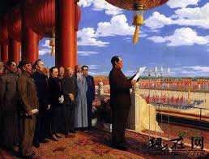中华人民共和国建立。中华儿女从此踏上了民族复兴新征程
1952
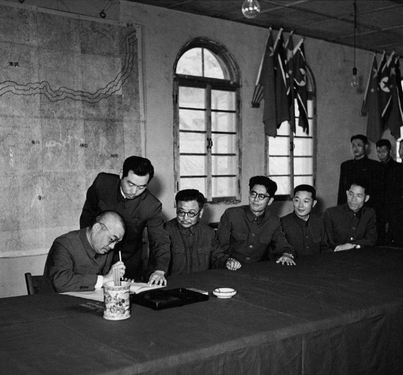抗美援朝战争取得胜利。抗美援朝战争的胜利不仅极大地鼓舞了中国人民，还为中国经济建设取得了长期安全和平的环境。
1964/10/16
我国第一颗原子弹爆炸的成功。弱国无外交！我国第一颗原子弹的研制成功，打破了帝国主义的核垄断，确立了我国的大国强国地位
1967/6/17
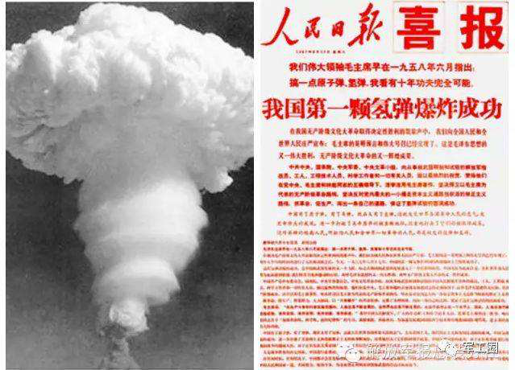我国第一颗氢弹空爆试验成功，标志着我国成功掌握了核聚变技术，进一步巩固我国的大国强国地位
1970/4/24
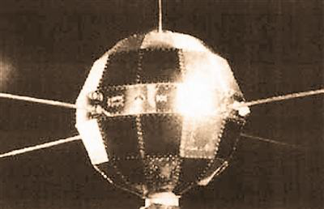我国第一颗人造卫星发射成功，东方红一号让《东方红》在全世界唱响
1971/10/25
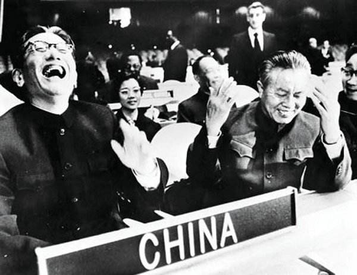联合国恢复我国合法席位。中国，再一次证明了自己，在全世界拥有了发言权，没有任何国家再敢轻视中国！
1973
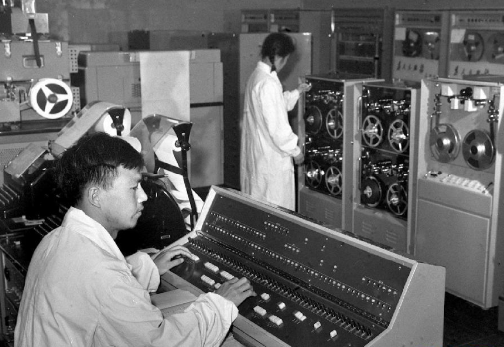我国第一台每秒钟运算100万次的集成电路电子计算机在北京试制成功。
1974
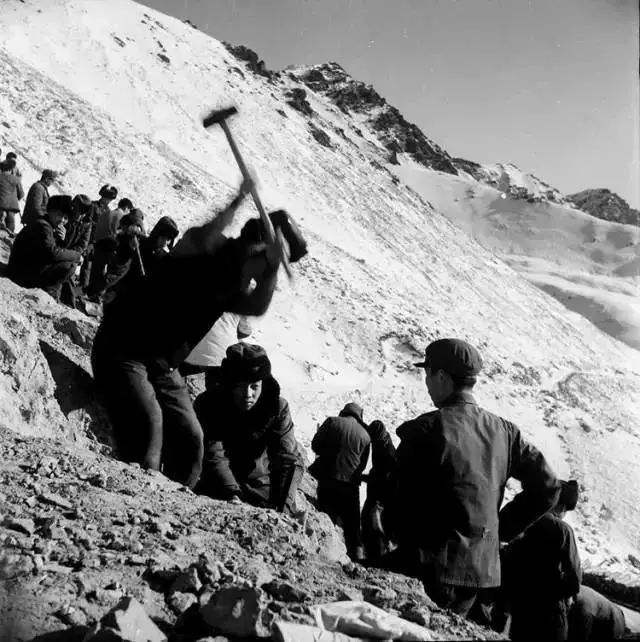解放军参加修筑天山公路
1975
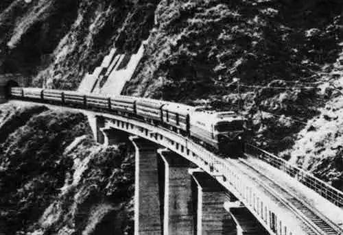中国第一条电气化铁路—宝成铁路建成。
1976
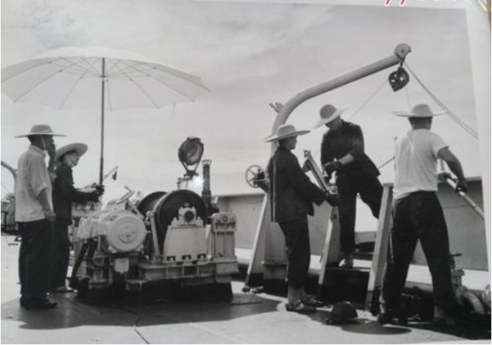首次成功进行远洋科学考察
1977
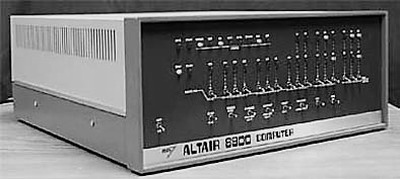我国第一台微型计算机诞生
1978
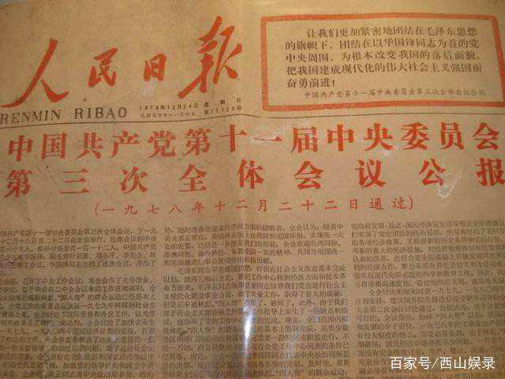改革开放
1979
 中美建交
中美建交
1980
 1980我国首次参加冬季奥林匹克运动会
1980我国首次参加冬季奥林匹克运动会
1981
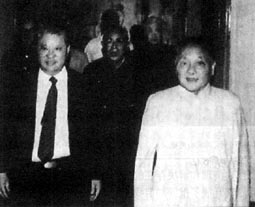1981邓小平首次提出“一国两制”
1982
邓小平提出“一国两制”构想
1983
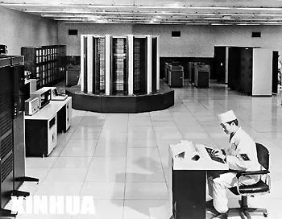我国第一台亿次计算机“银河”研制成功
1992
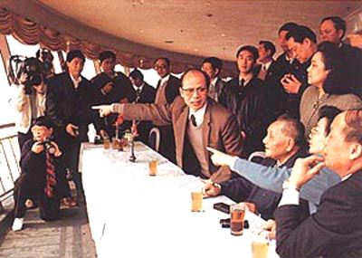1992 邓小平南巡并发表重要讲话
1997/7/1
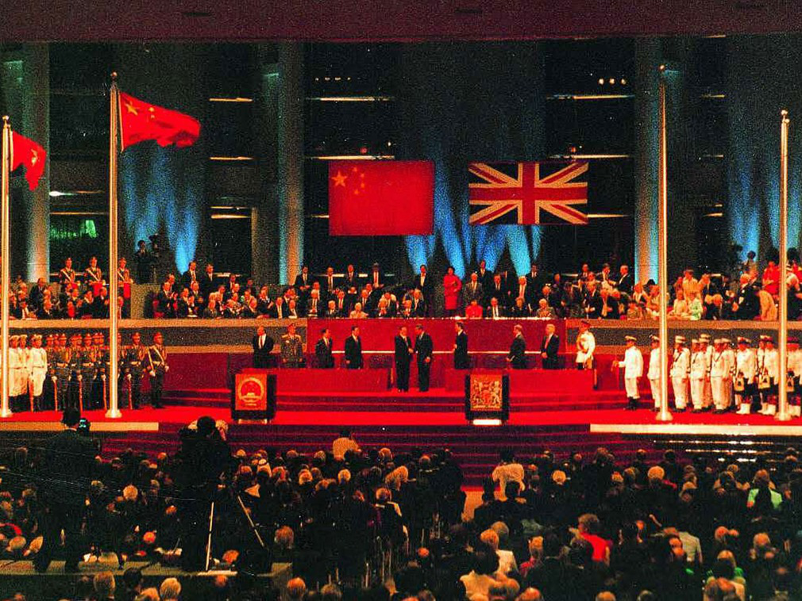中英两国政府香港政权交接的仪式在香港隆重举行。中华人民共和国主席江泽民庄严宣告：中国对香港恢复行使主权；中华人民共和国香港特别行政区正式成立。
1998/12/20
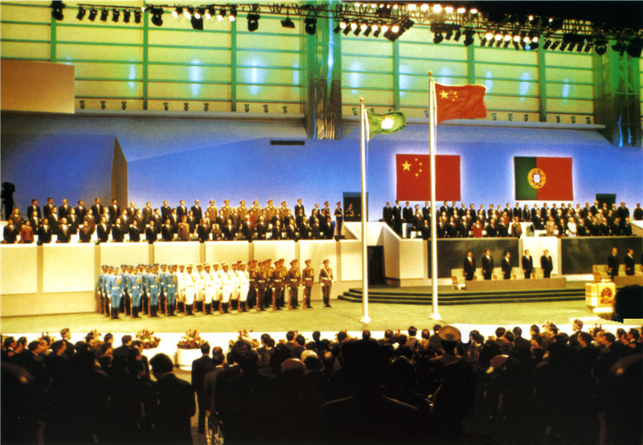中葡两国政府澳门政权交接仪式隆重举行。江泽民主席郑重宣告中国政府对澳门恢复行使主权，中华人民共和国澳门特别行政区成立。澳门行政区政府宣誓就职。
2000/5/19
2000年 ５月１９日 经过友好磋商，中国与欧盟在北京就中国加入世界贸易组织达成双边协议。
2001/10/21
亚太经合组织(APEC)第九次领导人非正式会议在上海举行，这是中国第一次举行这样高级别的大型国际会议。
2003/10/15
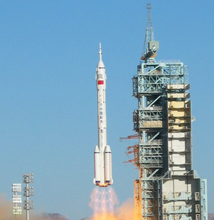我国自主研制的“神舟”五号载人飞船在酒泉卫星发射中心用“长征”二号F型运载火箭发射升空。9时9分50秒，飞船准确进入预定轨道，将中国第一名航天员成功送上太空。
2005/9/3
纪念中国人民抗日战争暨世界反法西斯战争胜利60周年大会在北京举行。
2006/7/1
青藏铁路全线建成通车。铁路全长1956公里，最高点海拔5072米，是世界上海拔最高、线路最长的高原铁路。胡锦涛出席庆祝大会并发表讲话，号召全党全国各族人民学习和弘扬挑战极限、勇创一流的青藏铁路精神。
2008/5/12
四川汶川发生里氏８级特大地震，造成６９２２７人遇难，１７９２３人失踪，受灾群众１５１０万人。在中共中央、国务院、中央军委的领导下，我国迅速组织了历史上救援速度最快、动员范围最广、投入力量最大的抗震救灾活动，夺取了抗震救灾斗争的重大胜利。
2008/8/8
 北京成功举办第二十九届奥运会，共有２０４个国家和地区的代表团１万多名运动员参加本届奥运会。中国体育代表团在奥运会上获得５１枚金牌、２１枚银牌、２８枚铜牌，位居金牌榜第一位
北京成功举办第二十九届奥运会，共有２０４个国家和地区的代表团１万多名运动员参加本届奥运会。中国体育代表团在奥运会上获得５１枚金牌、２１枚银牌、２８枚铜牌，位居金牌榜第一位
2010/5/1
中国2010年上海世界博览会举行，主题是“城市，让生活更美好”。这是中国首次举办的综合性世界博览会，也是第一次在发展中国家举行的注册类世界博览会。246个国家和国际组织参展。中外参观者达7308万人次，创造了世博会历史上的新纪录。
2015/10/5
屠呦呦获2015年诺贝尔生理学或医学奖。
2016/7
中国共产党九十五岁华诞之际，总书记用建党之初的奋斗精神砥砺全党，“不忘初心，继续前进”。
2017/6/13
 “蛟龙”号深海载人潜水器圆满完成为期5年的试验性应用航次全部下潜任务，其中11个潜次作业水深超过6500米，为下一阶段业务化运行奠定坚实基础
“蛟龙”号深海载人潜水器圆满完成为期5年的试验性应用航次全部下潜任务，其中11个潜次作业水深超过6500米，为下一阶段业务化运行奠定坚实基础
2018
2018年 隆重纪念改革开放40周年
2019
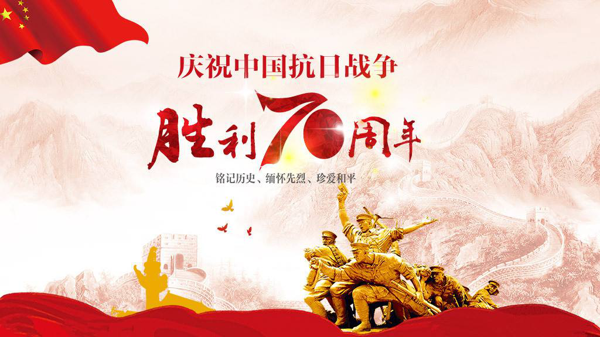2019年10月1日 辉煌70年——中华人民共和国成立70周年